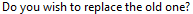
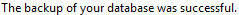

from sikuli import * import logging import myTools import email_Send #---------------------------------------------------# def fBackup_Data(pBkuName): #---------------------------------------------------# logging.debug('Backup_Data: ' + pBkuName) # make sure timeslips has focus myTools.getFocus() type("f",KeyModifier.ALT) type("b") time.sleep(1) # no subfolders type("s",KeyModifier.ALT) time.sleep(1) # YES button type(Key.ENTER) time.sleep(1) # enter backup name type(pBkuName) time.sleep(1) # SAVE button type(Key.ENTER) time.sleep(1) if exists(): type(Key.ENTER) logging.debug('- overwrite backup') wait(,60) # OK button type(Key.ENTER) email_Send.fSend_Text(pBkuName) #---------------------------------------------------# def fBackup_Checkpoint(pCheckpointName): #---------------------------------------------------# myTools.sectionStartTimeStamp("backup checkpoint") logging.debug('Backup_Checkpoint: ' + pCheckpointName) # name backup file: ex: 2015-slips strBackupFile = Settings.tsVersion + "-" + pCheckpointName fBackup_Data(strBackupFile) myTools.sectionEndTimeStamp() #---------------------------------------------------# def fBackup_BillData(pBillMonth,pAorB): #---------------------------------------------------# myTools.sectionStartTimeStamp("backup billdata") logging.debug('Backup_Data: ' + str(pBillMonth)) bkuExt = pAorB + ".tbu" # name backup file: ex: 2015-bill-03 strBackupFile = myTools.monthToName(pBillMonth,"-bill-",bkuExt) fBackup_Data(strBackupFile) myTools.sectionEndTimeStamp()